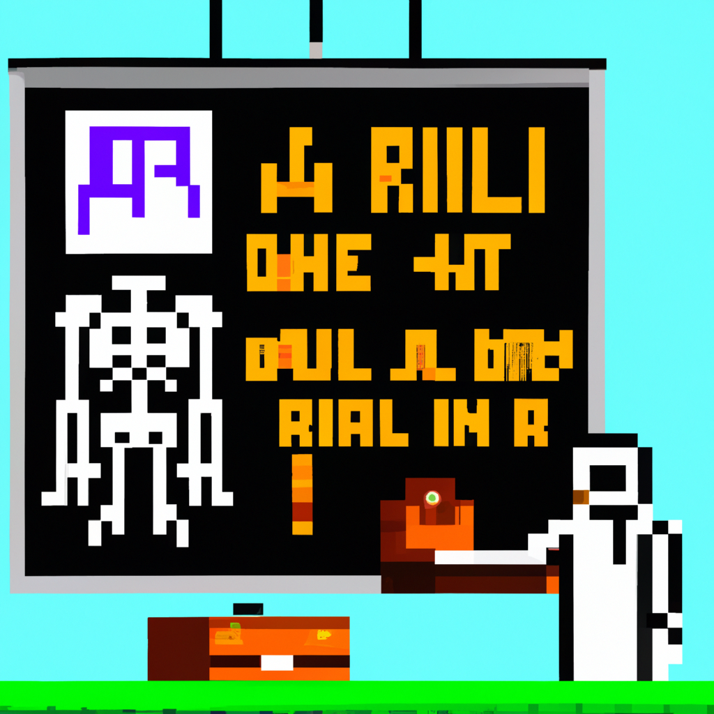

Why AI will never replace the radiologist
In the last few years, the use of artificial intelligence (AI) in the medical field has skyrocketed. AI can detect tumors and other anomalies in medical images, diagnose illnesses, and even recommend treatments. AI has the potential to revolutionize the medical field and make diagnostics faster and more accurate.
However, as promising as AI is in the medical field, it will never be able to replace the radiologist. Radiologists are highly trained professionals who can interpret medical images and make diagnoses based on their expertise. They also have the ability to use their experience and judgment to make decisions in complex cases.
AI lacks the ability to recognize subtle nuances in medical images. For example, AI might not be able to make a diagnosis if the abnormality is small or if there are conflicting signs. AI is also not able to make decisions in complex cases, as it is limited by its programming and can¡¦t make judgments based on experience.
Radiologists also have the ability to communicate and counsel patients. They can provide guidance on treatment options and discuss the results of imaging exams. AI is not able to provide this kind of personalized care.
AI is a powerful tool that can help radiologists make more accurate diagnoses and help reduce the workload for radiologists. However, AI will never replace the radiologist. Radiologists are highly trained professionals who are able to interpret medical images and make diagnoses based on their expertise and experience. AI can never match the level of expertise and care that radiologists can provide.